▶ วิดีโอสอน: ตั้งค่าบริษัท
ส่วนต่างๆ ของหน้าตั้งค่า
อยู่ที่ตั้งค่าตั้งค่าบริษัท
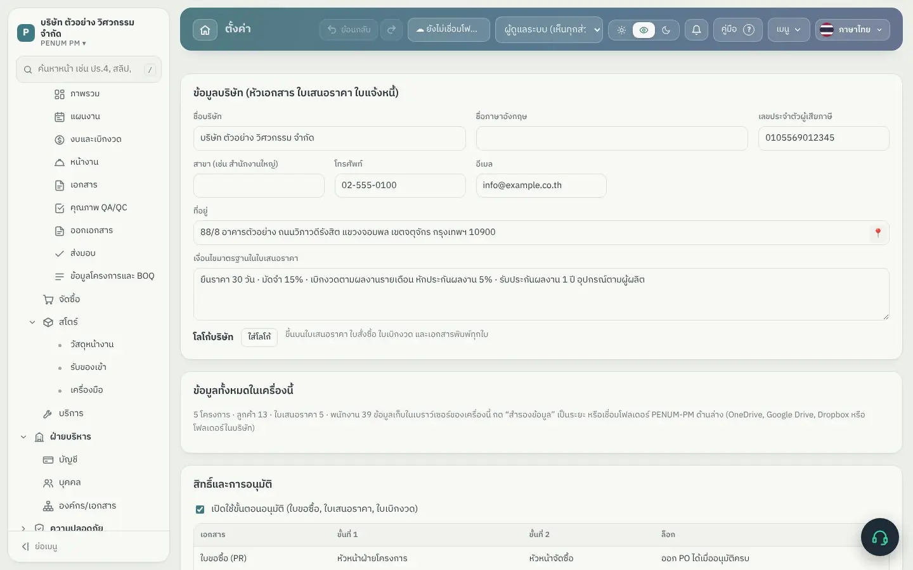
ข้อมูลบริษัทสำหรับหัวเอกสาร| ส่วน | ใช้ทำอะไร |
|---|
| ข้อมูลบริษัท | ชื่อ ที่อยู่ เลขผู้เสียภาษี โทร อีเมล โลโก้ และเงื่อนไขมาตรฐานที่พิมพ์ในใบเสนอราคา |
| ข้อมูลทั้งหมดในเครื่องนี้ | บอกจำนวนโครงการ ลูกค้า ใบเสนอราคา พนักงาน ที่อยู่ในเครื่อง |
| สิทธิ์และการอนุมัติ | เปิด/ปิดขั้นตอนอนุมัติ ผู้อนุมัติขั้น 1–2 และฝ่ายไหนเห็นส่วนไหน (บทที่ 2.6) |
| ที่เก็บข้อมูล | คลาวด์ PENUM (แนะนำ) หรือโฟลเดอร์ PENUM-PM บน OneDrive / Google Drive / Dropbox / NAS และปุ่มย้ายที่เก็บข้อมูล (บทที่ 2.4) |
| เก็บข้อมูลบน OneDrive และล็อกอิน | แบบบัญชี Microsoft สำหรับผู้ดูแลไอที ไม่จำเป็นสำหรับบริษัททั่วไป (ซ่อนเมื่อใช้คลาวด์หรือโฟลเดอร์) |
| เข้าระบบด้วย PIN | ตั้ง PIN ผู้ดูแลและพนักงาน เปิด/ปิดการเข้าระบบด้วย PIN และ ลิงก์เชิญ ของแต่ละคน (บทที่ 2.7) |
| มือถือ | ปุ่ม นำเข้างานจากมือถือ สำหรับไฟล์ที่ส่งมาทาง LINE หรืออีเมล |
| เลขที่เอกสารและภาษี | ตัวหน้าเลขที่เอกสารและการจด VAT กด เปิดหน้าตั้งค่าบริษัททั้งหมด |
| แจ้งเตือนผ่าน LINE | เลือกเรื่องที่จะส่งสรุปเข้ากลุ่ม และชื่อกลุ่ม LINE ของบริษัท |
| ลายเซ็นอิเล็กทรอนิกส์ | ลายเซ็นของแต่ละคน ใช้ใส่ตอนพิมพ์เอกสาร (บทที่ 4.4) |
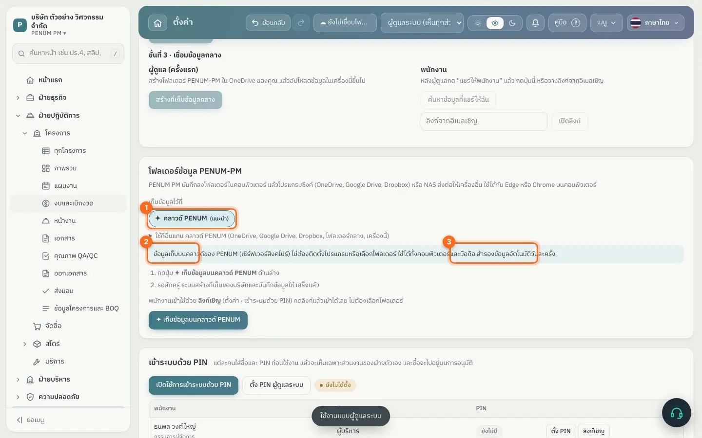
ที่เก็บข้อมูล: คลาวด์ PENUM (1) OneDrive (2) หรือเฉพาะเครื่องนี้ (3)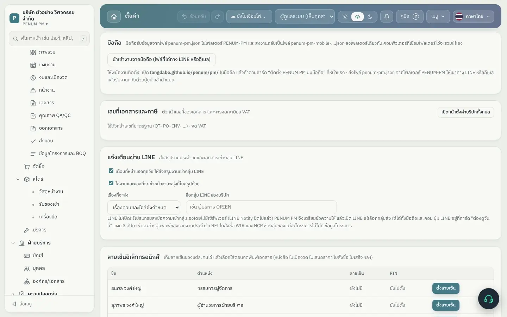
มือถือ เลขที่เอกสาร และแจ้งเตือนผ่าน LINEรู้ไว้รหัสเปิดใช้งานใกล้หมดอายุ โปรแกรมเตือนล่วงหน้า 30 วัน ต่ออายุโดยใส่รหัสใหม่ที่ได้จากผู้ให้บริการ
เลือกที่เก็บข้อมูลของบริษัท
ขั้นนี้ทำให้ทุกเครื่องและมือถือของบริษัทใช้ข้อมูลชุดเดียวกัน และมีสำรองอัตโนมัติทุกวัน
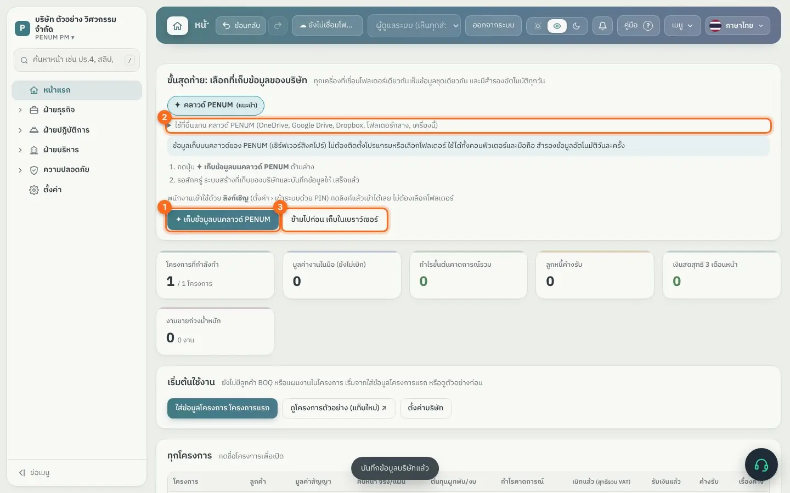
ขั้นสุดท้ายของการตั้งค่า: เลือกที่เก็บข้อมูล- 1
วิธีที่แนะนำ: กด ✦ เก็บข้อมูลบนคลาวด์ PENUM (1) รอสักครู่ ระบบสร้างที่เก็บของบริษัทและบันทึกข้อมูลให้ ไม่ต้องติดตั้งโปรแกรมหรือเลือกโฟลเดอร์ ใช้ได้ทั้งคอมพิวเตอร์และมือถือ
- 2
ถ้าบริษัทอยากเก็บเอง กด ใช้ที่อื่นแทน (2) แล้วเลือก OneDrive / Google Drive / Dropbox / โฟลเดอร์กลางในบริษัท (NAS) / เฉพาะเครื่องนี้
- 3
ถ้ายังไม่พร้อม กด ข้ามไปก่อน เก็บในเบราว์เซอร์ (3) แล้วค่อยเลือกภายหลังที่ ตั้งค่า › ตั้งค่าบริษัท
| ที่เก็บ | เหมาะกับ | วิธีใช้ |
|---|
| คลาวด์ PENUM (แนะนำ) | ทุกบริษัท โดยเฉพาะที่มีทีมหน้างานใช้มือถือ | กดปุ่มเดียว ข้อมูลอยู่บนเซิร์ฟเวอร์สิงคโปร์ สำรองวันละครั้ง พนักงานเข้าด้วยลิงก์เชิญ แชทส่งถึงกันทันที |
| OneDrive / Google Drive / Dropbox | บริษัทที่ใช้บริการนี้อยู่แล้ว | เลือกโฟลเดอร์ของบริการนั้นในเครื่อง โปรแกรมสร้างโฟลเดอร์ PENUM-PM ให้เอง ทุกเครื่องต้องติดตั้งโปรแกรมซิงก์ของบริการนั้น |
| โฟลเดอร์กลางในบริษัท (NAS) | บริษัทที่มีเซิร์ฟเวอร์ในออฟฟิศ | เลือกโฟลเดอร์ที่แชร์ในเครือข่าย ใช้ได้เฉพาะในออฟฟิศ |
| เฉพาะเครื่องนี้ | ใช้คนเดียว หรือทดลอง | ไม่แชร์ ต้องสำรองข้อมูลเอง |
ระวังถ้าเก็บในโฟลเดอร์ โปรแกรมทำงานเฉพาะในโฟลเดอร์ PENUM-PM เท่านั้น ไม่แตะ ไม่ย้าย และไม่ลบไฟล์อื่นของบริษัท
เปลี่ยนที่เก็บภายหลังได้ที่ ตั้งค่า › ตั้งค่าบริษัท › ย้ายที่เก็บข้อมูล ปุ่มที่หัวจอบอกเสมอว่าข้อมูลเก็บอยู่ที่ไหน
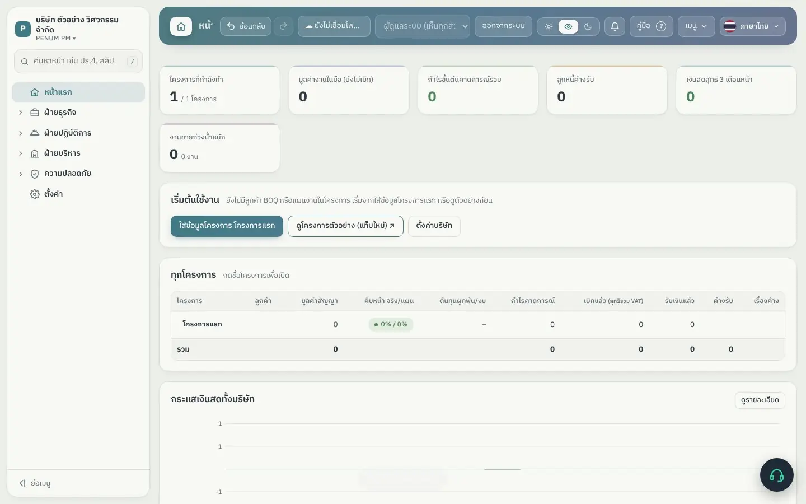
บริษัทใหม่พร้อมใช้งาน: กด + สร้างโครงการแรก หรือ ตั้งค่าบริษัทตั้ง PIN และสิทธิ์ของแต่ละคน
อยู่ที่ตั้งค่าตั้งค่าบริษัทเข้าระบบด้วย PIN
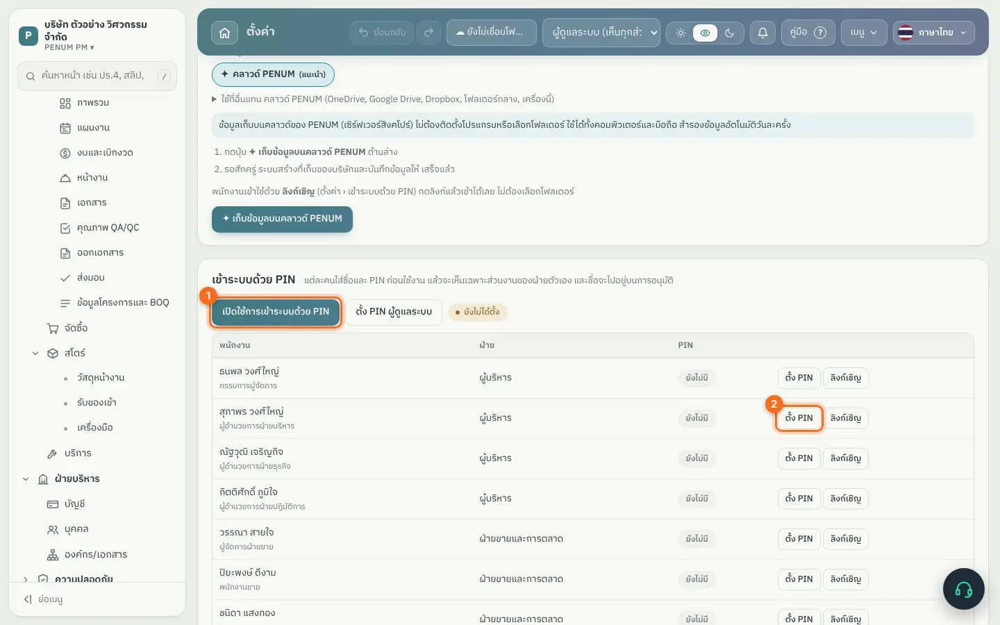
ตั้ง PIN ให้พนักงาน และเปิดใช้การเข้าระบบด้วย PIN- 1
กด ตั้ง PIN ผู้ดูแลระบบ (ถ้ายังไม่ได้ตั้งตอนตั้งค่าบริษัท)
- 2
กด ตั้ง PIN (2) ท้ายชื่อพนักงานแต่ละคน ใส่ PIN แล้วแจ้งเจ้าตัว
- 3
กด เปิดใช้การเข้าระบบด้วย PIN (1) จากนี้ทุกเครื่องที่ใช้ข้อมูลชุดนี้ต้องใส่ชื่อและ PIN ก่อนใช้งาน
เมื่อเข้าระบบแล้ว แต่ละคนเห็นเฉพาะส่วนงานของฝ่ายตัวเอง กำหนดได้ที่ สิทธิ์และการอนุมัติ ในหน้าเดียวกัน
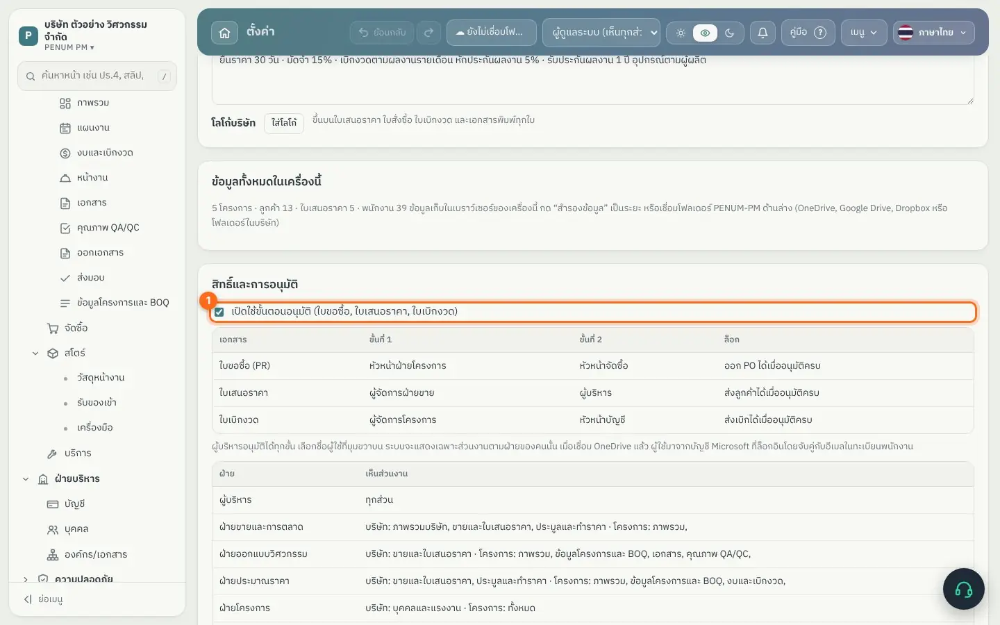
สิทธิ์และการอนุมัติ: ใครอนุมัติเอกสารอะไร และแต่ละฝ่ายเห็นส่วนไหน- ติ๊ก เปิดใช้ขั้นตอนอนุมัติ (1) สำหรับใบขอซื้อ ใบเสนอราคา และใบเบิกงวด (ใบลา โอที สวัสดิการ และเงินสดย่อยมีขั้นตอนอนุมัติของตัวเอง)
- แต่ละเอกสารมีผู้อนุมัติขั้นที่ 1 และขั้นที่ 2 และคอลัมน์ “ล็อก” บอกว่าทำอะไรต่อไม่ได้จนกว่าจะอนุมัติครบ เช่น ออก PO ได้เมื่ออนุมัติครบ
- ตารางฝ่าย › เห็นส่วนงาน บอกว่าแต่ละฝ่ายเห็นเมนูไหน
เชิญพนักงานเข้าระบบด้วยลิงก์
อยู่ที่ตั้งค่าตั้งค่าบริษัทเข้าระบบด้วย PINปุ่ม ลิงก์เชิญ
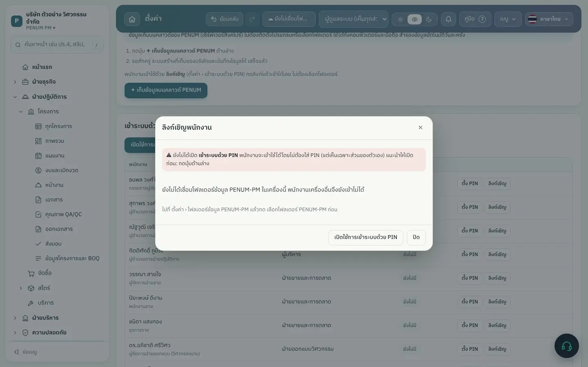
ลิงก์เชิญของพนักงานแต่ละคน- 1
ตั้ง PIN ให้พนักงานคนนั้นก่อน แล้วกด ลิงก์เชิญ ท้ายชื่อ
- 2
กด คัดลอก แล้วส่งลิงก์ทาง LINE หรืออีเมลให้เจ้าตัว
- 3
พนักงานกดลิงก์บนมือถือหรือคอมพิวเตอร์ของตัวเอง เข้าใช้ได้เลย ไม่ต้องตั้งบริษัทหรือเลือกโฟลเดอร์ (ถ้าบริษัทใช้โฟลเดอร์ ให้เลือกโฟลเดอร์ PENUM-PM ที่แชร์ไว้)
- 4
เครื่องของพนักงานจะล็อกเป็นชื่อของคนนั้น เห็นเฉพาะงานของฝ่ายตัวเอง
ระวังลิงก์เชิญเป็นของคนคนเดียว อย่าส่งในกลุ่ม ถ้าลิงก์หลุด ให้ตั้ง PIN ใหม่ให้คนนั้น
เครื่องที่ 2 ของบริษัทขึ้นไป
- บริษัทใช้คลาวด์ PENUM: เปิดลิงก์เชิญของตัวเองในเครื่องใหม่ (หรือให้ผู้ดูแลส่งลิงก์ให้) แล้วเข้าระบบด้วย PIN จบ
- บริษัทใช้โฟลเดอร์: ติดตั้งโปรแกรมซิงก์ (OneDrive, Google Drive, Dropbox) ล็อกอินบัญชีบริษัท ให้โฟลเดอร์ PENUM-PM ซิงก์ลงเครื่อง เปิด PENUM PM ใน Chrome หรือ Edge กด เชื่อมโฟลเดอร์ PENUM-PM ที่มีข้อมูลบริษัทอยู่แล้ว เลือกโฟลเดอร์เดิม กด อนุญาต แล้วเข้าระบบด้วย PIN
ลายเซ็นอิเล็กทรอนิกส์
อยู่ที่ตั้งค่าตั้งค่าบริษัทลายเซ็นอิเล็กทรอนิกส์
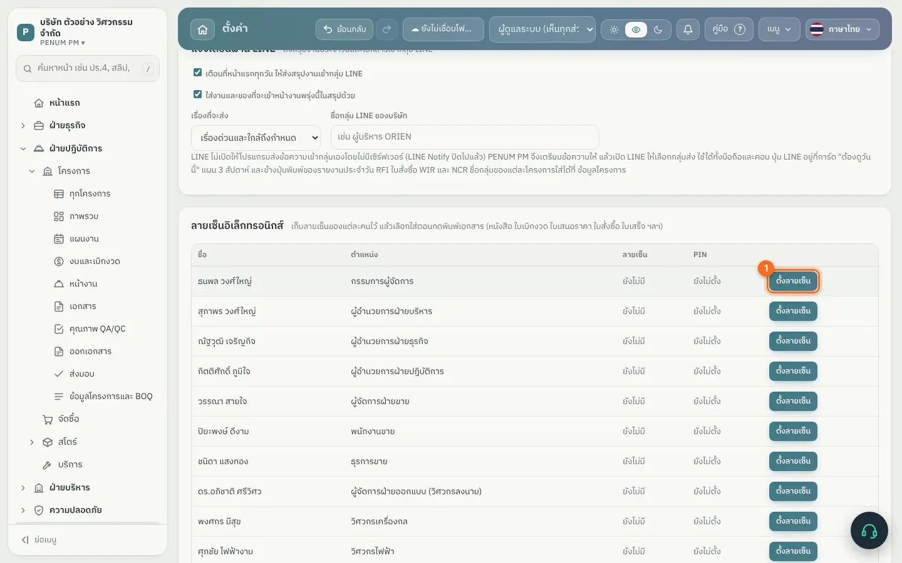
รายชื่อลายเซ็นของแต่ละคน กด ตั้งลายเซ็น (1)- 1
กด ตั้งลายเซ็น (1) ท้ายชื่อ (พนักงานตั้งของตัวเองได้ที่ เมนู › ลายเซ็นของฉัน)
- 2
เซ็นด้วยเมาส์หรือนิ้วบนช่องสี่เหลี่ยม หรืออัปโหลดรูปลายเซ็น (PNG / JPG) แล้วกด บันทึก
- 3
ตอนกดพิมพ์เอกสาร (หนังสือนำส่ง ใบเบิกงวด ใบเสนอราคา ฯลฯ) โปรแกรมถามว่าจะใส่ลายเซ็นของใคร หรือไม่ใส่
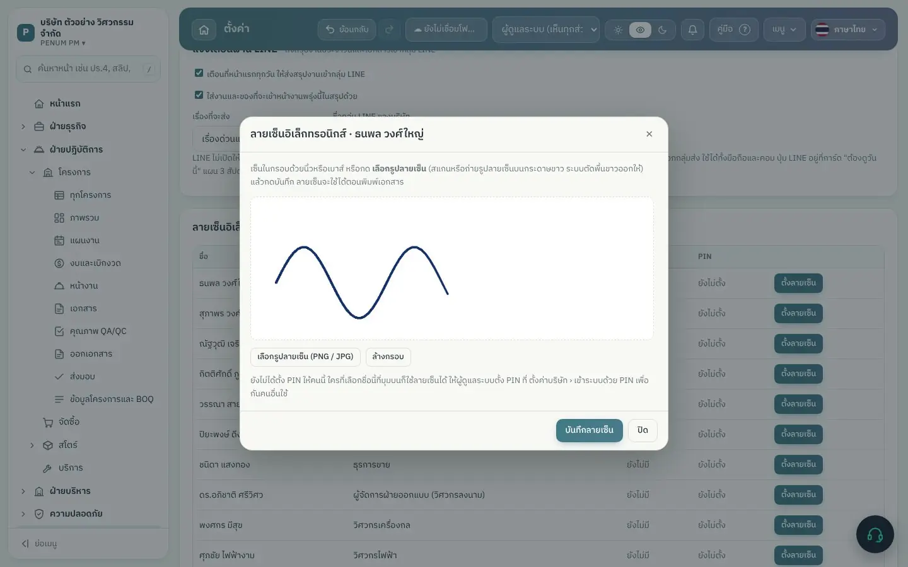
เซ็นบนหน้าจอ หรืออัปโหลดรูปลายเซ็นรู้ไว้ลายเซ็นใส่ลงเอกสารตอนพิมพ์เท่านั้น ไม่ได้ฝังในข้อมูลของเอกสาร และแต่ละคนใช้ได้แต่ลายเซ็นของตัวเอง
เลขที่เอกสารรันต่อกันทั้งบริษัท
อยู่ที่ตั้งค่าตั้งค่าบริษัทเลขที่เอกสารและภาษี
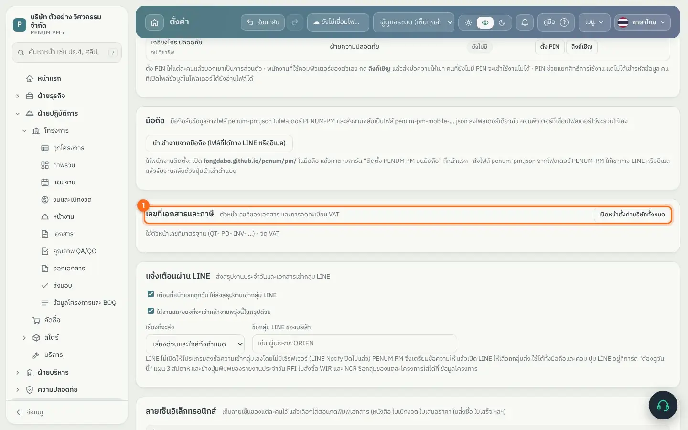
ตัวหน้าเลขที่เอกสารและการจด VAT- ใบเบิกงวด ใบสั่งซื้อ และใบขอซื้อ รันเลขต่อกันทั้งบริษัท (INV-001, INV-002 …) ไม่เริ่ม 001 ใหม่ทุกโครงการ เลขจึงไม่ซ้ำกันข้ามโครงการ
- แก้ตัวหน้าเลข เช่น INV- เป็น IV69- ได้ที่ส่วนนี้
- ถ้ามีเลขซ้ำจากข้อมูลเก่า รายการจะมีป้าย เลขซ้ำ ใบที่ยังเป็นร่างกดรับเลขถัดไปได้ในคลิกเดียว ใบที่ส่งลูกค้าแล้วคงเลขเดิม
สำรองข้อมูล
- 1
กด เมนู มุมขวาบน
- 2
กด สำรองข้อมูล (ดาวน์โหลดไฟล์)
- 3
จะได้ไฟล์ชื่อ PENUM-PM-วันที่.json เก็บไว้ในที่ปลอดภัย เช่น OneDrive หรือฮาร์ดดิสก์สำรอง
- ถ้าเชื่อมโฟลเดอร์ OneDrive แล้ว โปรแกรมสำรองให้อัตโนมัติทุกวัน แต่ควรดาวน์โหลดเก็บเองสัปดาห์ละครั้งด้วย
- ถ้าใช้คลาวด์ PENUM ระบบสำรองให้วันละครั้งบนคลาวด์ ควรดาวน์โหลดเก็บเองเดือนละครั้งด้วย
- ไฟล์สำรองมีข้อมูลทั้งบริษัท รวมเงินเดือน อย่าส่งให้คนนอก
- เลิกใช้เครื่องนี้ (เช่น คืนเครื่อง): ใช้ นำบริษัทนี้ออกจากเครื่องนี้ ในหน้าเลือกบริษัท ข้อมูลบนคลาวด์หรือโฟลเดอร์ยังอยู่ครบ ถ้าเก็บในเครื่องเดียว โปรแกรมให้ดาวน์โหลดไฟล์สำรองก่อน
กู้คืนจากไฟล์สำรอง
- 1
กด เมนู › เปิดไฟล์สำรอง (หรือปุ่ม เปิดไฟล์สำรอง ในหน้าเริ่มใช้)
- 2
เลือกไฟล์ PENUM-PM-วันที่.json
- 3
ยืนยัน ข้อมูลในเครื่องจะถูกแทนที่ด้วยข้อมูลในไฟล์
ระวังการเปิดไฟล์สำรองแทนที่ข้อมูลทั้งหมดในเครื่องนั้น ถ้าเครื่องนั้นเชื่อม OneDrive อยู่ ข้อมูลกลางจะเปลี่ยนตามด้วย ให้ผู้ดูแลระบบเป็นคนทำเท่านั้น